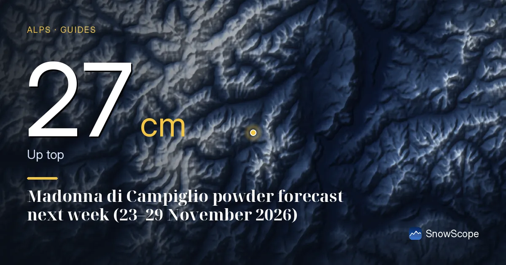

Madonna di Campiglio powder forecast next week (23–29 November 2026): 27 cm up top
Next week Madonna di Campiglio receives a significant snow event. At the top around 2500 m the forecast totals 27 cm (8–46 cm across the range), concentrated over just three days. Wednesday 25 and Thursday 26 November carry the bulk of it, making the following Friday a prime day to find soft snow.
See the live snow forecast for Madonna di Campiglio in the SnowScope appSnow depth, powder alerts and the 3D map, free.

The heavy snow days: 25–27 November
The week's snow arrives in a narrow window. Wednesday 25 brings 13 cm at the summit (up to 19 cm in the high case), Thursday 26 adds 10 cm (up to 18 cm), and Friday 27 contributes 3 cm (up to 6 cm). After that, the week dries up almost completely.
This concentration matters for planning. If you can be there Friday 26 or Saturday 27 morning with fresh light, the Grostè and Spinale will have soft cover. The broad high slopes beneath the Brenta Dolomites hold snow longest and ski best when conditions are newest.
Height and terrain: where the snow stays deepest
Snow depth across Madonna di Campiglio shows a consistent picture from top to bottom. At mid-mountain around 2000 m, expect 25 cm for the week (8–43 cm range); at the base around 1600 m, the total is 23 cm (5–41 cm). Little snow is lost to melting as it falls, so skiing is feasible at all elevations.
The difference is in what you find underfoot. The Grostè ridge and Spinale hold the best and deepest snow because of their height and exposure. Lower terrain, especially around the town of Madonna di Campiglio itself, will be thinner. For the most reliable skiing, stay high and north-facing when you can.
How this week compares with next week
Before the main event, the period from 17 to 20 November adds only 6 cm at the top and 3 cm at the base. This is a quiet start to the forecast week. The real snow arrives after that, making next week the decisive period for Madonna di Campiglio.
Unlike resorts further west in the Alps, Madonna di Campiglio often catches better snow in the second half of a two-week cycle. That pattern holds here: the 23–29 November window is where the action is.
Why Madonna di Campiglio wins this round
Positioned as the western gateway to the Dolomites, Madonna di Campiglio receives more of the southern storm track than valleys deeper into the range. This geographic advantage shows in the numbers: at the summit, 27 cm is forecast here, compared with 19 cm at Livigno (63 km away), 13 cm at Obergurgl (73 km away) and 11 cm at Val Gardena (79 km away).
If you are choosing between nearby resorts for the week of 23–29 November, the depth of snow on the upper slopes gives Madonna di Campiglio a clear edge. The storm alignment favours the western valleys this time.
Uncertainty and what to watch
The forecast range is wide. The low case gives only 8 cm up top; the high case reaches 46 cm. This spread reflects genuine uncertainty about storm intensity and track. Storm timing firms up faster than totals do, so the dates 25–27 November should hold, but whether the snow will be modest or abundant remains open.
Check the forecast again on 23 or 24 November. By then the storm should be clearer, and you will have a better sense of which case—light, medium or heavy—is tracking your way. Early-season snow can be thin in places, so look for where it sticks best: the high north-facing terrain.
Practical steps before you go
Early season at Madonna di Campiglio means checking lift status directly with the resort. Not all terrain is open this early, and conditions on what is open can still be patchy. Confirm which slopes and lifts are running before you book travel.
If you plan to leave the marked pistes, consult the regional avalanche bulletin (bollettino valanghe) for the latest safety assessment. Even with fresh snow, early-season pack and density are often different from mid-winter, which affects both avalanche risk and how the snow skis.
Tips for skiers
- Aim for Friday 26 or Saturday 27 November. Thursday 25 may still see active snow; Friday morning offers soft cover with clearer skies.
- Ski high: the Grostè and Spinale hold snow deepest and longest. Treat lower terrain near Madonna di Campiglio town as thinner.
- Early season snow is often patchy. Confirm with the resort which lifts are running before you travel.
- Watch the forecast midweek (23–24 November): the range at the summit spans 8–46 cm, so clarity on storm intensity will firm up closer to the event.
- Before leaving the pistes, check the regional avalanche bulletin (bollettino valanghe).
About these numbers
Resort snow depths are the deepest snow on the resort's upper slopes on the date shown; they are estimates for an area, not a measurement at one point. Forecasts can change. Always read the official avalanche bulletin before going off-piste.
Cite this report
For research, teaching or the press: the numbers and charts are free to reuse under CC BY 4.0 with this citation.
SnowScope (2026), Madonna di Campiglio powder forecast next week (23–29 November 2026): 27 cm up top, https://snowscope.app/blog/en/2026/11/madonna-di-campiglio-powder-forecast-next-week-23-29-november-2026.html, accessed 2026-11-16
SnowScope (Atlas Labs). (2026, November 16). Madonna di Campiglio powder forecast next week (23–29 November 2026): 27 cm up top. SnowScope snow reports. https://snowscope.app/blog/en/2026/11/madonna-di-campiglio-powder-forecast-next-week-23-29-november-2026.html
BibTeX
@misc{snowscope2026madonnadicampigliopowder,
author = {{SnowScope (Atlas Labs)}},
title = {Madonna di Campiglio powder forecast next week (23–29 November 2026): 27 cm up top},
year = {2026},
month = nov,
howpublished = {\url{https://snowscope.app/blog/en/2026/11/madonna-di-campiglio-powder-forecast-next-week-23-29-november-2026.html}},
note = {Published 2026-11-16 11:53 UTC; accessed 2026-11-16}
}· CC BY 4.0 · Methods, data and tools →
Madonna di Campiglio: snow and temperature by height, this winter vs last (tools) →
Follow Madonna di Campiglio
Free: a message when fresh snow is coming, and the forecast every morning.
More snow reports

Grimentz-Zinal offers 71 km of runs and reliable high-altitude snow for your December trip, with 6-day passes at CHF 339.00.

Galtür's mid-mountain holds 55 cm on a typical 15 December. Low-season passes cost EUR 55.50 until 18 December. Data from 46 winters, 1980-81 to 2025-26.

Slovenia's ski passes are the cheapest (Krvavec EUR 205 for 6 days), but natural December snow there is rare; Lachtal, the Hochkar and the Mölltal glacier do better.